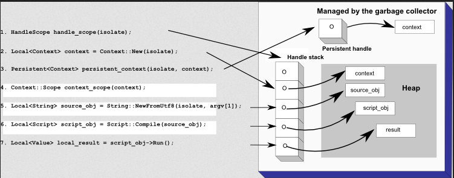

Getting Started with Embedding V8
Getting Started with Embedding V8
Installing & Testing Standalone V8 application
- Download the V8 source code
- Create a build configuration using the helper script:
tools/dev/v8gen.py x64.release.sample
- You can inspect and manually edit the build configuration by running:
gn args out.gn/x64.release.sample
- Build the static library on a Linux 64 system:
ninja -C out.gn/x64.release.sample v8_monolith
- Compile
hello-world.cc, linking to the static library created in the build process. For example, on 64bit Linux using the GNU compiler:
g++ -I. -Iinclude samples/hello-world.cc -o hello_world -fno-rtti -lv8_monolith -lv8_libbase -lv8_libplatform -ldl -Lout.gn/x64.release.sample/obj/ -pthread -std=c++17 -DV8_COMPRESS_POINTERS -DV8_ENABLE_SANDBOX
- For more complex code, V8 fails without an ICU data file. Copy this file to where your binary is stored:
cp out.gn/x64.release.sample/icudtl.dat .
- Run the
hello_worldexecutable file at the command line. e.g. On Linux, in the V8 directory, run:
./hello_world
V8 as a standalone virtual machine has some key V8 concepts such as handles, scopes, and contexts. The V8 API provides functions for compiling and executing scripts, accessing C++ methods and data structures, handling errors, and enabling security checks. Your application can use V8 just like any other C++ library. Your C++ code accesses V8 through the V8 API by including the header include/v8.h.
Hello World example (hello_world.cc)
// Copyright 2015 the V8 project authors. All rights reserved.
// Use of this source code is governed by a BSD-style license that can be
// found in the LICENSE file.
#include <stdio.h>
#include <stdlib.h>
#include <string.h>
#include "include/libplatform/libplatform.h"
#include "include/v8.h"
int main(int argc, char* argv[]) {
// Initialize V8.
v8::V8::InitializeICUDefaultLocation(argv[0]);
v8::V8::InitializeExternalStartupData(argv[0]);
std::unique_ptr<v8::Platform> platform = v8::platform::NewDefaultPlatform();
v8::V8::InitializePlatform(platform.get());
v8::V8::Initialize();
// Create a new Isolate and make it the current one.
v8::Isolate::CreateParams create_params;
create_params.array_buffer_allocator =
v8::ArrayBuffer::Allocator::NewDefaultAllocator();
v8::Isolate* isolate = v8::Isolate::New(create_params);
{
v8::Isolate::Scope isolate_scope(isolate);
// Create a stack-allocated handle scope.
v8::HandleScope handle_scope(isolate);
// Create a new context.
v8::Local<v8::Context> context = v8::Context::New(isolate);
// Enter the context for compiling and running the hello world script.
v8::Context::Scope context_scope(context);
{
// Create a string containing the JavaScript source code.
v8::Local<v8::String> source =
v8::String::NewFromUtf8(isolate, "'Hello' + ', World!'",
v8::NewStringType::kNormal)
.ToLocalChecked();
// Compile the source code.
v8::Local<v8::Script> script =
v8::Script::Compile(context, source).ToLocalChecked();
// Run the script to get the result.
v8::Local<v8::Value> result = script->Run(context).ToLocalChecked();
// Convert the result to an UTF8 string and print it.
v8::String::Utf8Value utf8(isolate, result);
printf("%s\n", *utf8);
}
{
// Use the JavaScript API to generate a WebAssembly module.
//
// |bytes| contains the binary format for the following module:
//
// (func (export "add") (param i32 i32) (result i32)
// get_local 0
// get_local 1
// i32.add)
//
const char* csource = R"(
let bytes = new Uint8Array([
0x00, 0x61, 0x73, 0x6d, 0x01, 0x00, 0x00, 0x00, 0x01, 0x07, 0x01,
0x60, 0x02, 0x7f, 0x7f, 0x01, 0x7f, 0x03, 0x02, 0x01, 0x00, 0x07,
0x07, 0x01, 0x03, 0x61, 0x64, 0x64, 0x00, 0x00, 0x0a, 0x09, 0x01,
0x07, 0x00, 0x20, 0x00, 0x20, 0x01, 0x6a, 0x0b
]);
let module = new WebAssembly.Module(bytes);
let instance = new WebAssembly.Instance(module);
instance.exports.add(3, 4);
)";
// Create a string containing the JavaScript source code.
v8::Local<v8::String> source =
v8::String::NewFromUtf8(isolate, csource, v8::NewStringType::kNormal)
.ToLocalChecked();
// Compile the source code.
v8::Local<v8::Script> script =
v8::Script::Compile(context, source).ToLocalChecked();
// Run the script to get the result.
v8::Local<v8::Value> result = script->Run(context).ToLocalChecked();
// Convert the result to a uint32 and print it.
uint32_t number = result->Uint32Value(context).ToChecked();
printf("3 + 4 = %u\n", number);
}
}
// Dispose the isolate and tear down V8.
isolate->Dispose();
v8::V8::Dispose();
v8::V8::ShutdownPlatform();
delete create_params.array_buffer_allocator;
return 0;
}
Handles and garbage collection
A handle provides a reference(link) to a JavaScript object’s location in the heap. The V8 garbage collector reclaims memory used by objects that can no longer again be accessed. During the garbage collection process the garbage collector often moves objects to different locations in the heap. When the garbage collector moves an object the garbage collector also updates all handles that refer to the object with the object’s new location.
An object is considered garbage if it is inaccessible from JavaScript and there are no handles that refer to it. From time to time the garbage collector removes all objects considered to be garbage. V8’s garbage collection mechanism is key to V8’s performance.
There are several types of handles:
-
Local handles are held on a stack and are deleted when the appropriate destructor is called. These handles’ lifetime is determined by a handle scope, which is often created at the beginning of a function call. When the handle scope is deleted, the garbage collector is free to deallocate those objects previously referenced by handles in the handle scope, provided they are no longer accessible from JavaScript or other handles. This type of handle is used in the hello world example above.
Local handles have the class
Local<SomeType>... v8::Local<v8::Context> context = v8::Context::New(isolate); // Enter the context for compiling and running the hello world script. v8::Context::Scope context_scope(context); { // Create a string containing the JavaScript source code. v8::Local<v8::String> source = v8::String::NewFromUtf8(isolate, "'Hello' + ', World!'", v8::NewStringType::kNormal) .ToLocalChecked(); // Compile the source code. v8::Local<v8::Script> script = v8::Script::Compile(context, source).ToLocalChecked(); // Run the script to get the result. v8::Local<v8::Value> result = script->Run(context).ToLocalChecked(); // Convert the result to an UTF8 string and print it. v8::String::Utf8Value utf8(isolate, result); printf("%s\n", *utf8); } ... // Create a string containing the JavaScript source code. v8::Local<v8::String> source = v8::String::NewFromUtf8(isolate, csource, v8::NewStringType::kNormal) .ToLocalChecked(); // Compile the source code. v8::Local<v8::Script> script = v8::Script::Compile(context, source).ToLocalChecked(); // Run the script to get the result. v8::Local<v8::Value> result = script->Run(context).ToLocalChecked(); ...Note: The handle stack is not part of the C++ call stack, but the handle scopes are embedded in the C++ stack. Handle scopes can only be stack-allocated, not allocated with
new.
-
Persistent handles provide a reference to a heap-allocated JavaScript Object, just like a local handle. There are two flavors, which differ in the lifetime management of the reference they handle. Use a persistent handle when you need to keep a reference to an object for more than one function call, or when handle lifetimes do not correspond to C++ scopes. Google Chrome, for example, uses persistent handles to refer to Document Object Model (DOM) nodes. A persistent handle can be made weak, using
PersistentBase::SetWeak, to trigger a callback from the garbage collector when the only references to an object are from weak persistent handles.- A
UniquePersistent<SomeType>handle relies on C++ constructors and destructors to manage the lifetime of the underlying object. - A
Persistent<SomeType>can be constructed with its constructor, but must be explicitly cleared withPersistent::Reset.
- A
-
There are other types of handles which are rarely used, that we will only briefly mention here:
- Eternal is a persistent handle for JavaScript objects that are expected to never be deleted. It is cheaper to use because it relieves the garbage collector from determining the liveness of that object.
- Both Persistent and UniquePersistent cannot be copied, which makes them unsuitable as values with pre-C++11 standard library containers. PersistentValuesMap and PersistentValueVector provide container classes for persistent values, with map and vector-like semantics. C++11 embedders do not require these, since C++11 move semantics solve the underlying problem.
Of course, creating a local handle every time you create an object can result in a lot of handles! This is where handle scopes are very useful. You can think of a handle scope as a container that holds lots of handles. When the handle scope’s destructor is called all handles created within that scope are removed from the stack. As you would expect, this results in the objects to which the handles point being eligible for deletion from the heap by the garbage collector.

When the destructor HandleScope::~HandleScope is called, the handle scope is deleted. Objects referred to by handles within the deleted handle scope are eligible for removal in the next garbage
collection if there are no other references to them. The garbage collector can also remove the source_obj, and script_obj objects from the heap as they are no longer referenced by any handles or otherwise reachable from JavaScript. Since the context handle is a persistent handle, it is not removed when the handle scope is exited. The only way to remove the context handle is to explicitly call Reset on it.
Note: Throughout this document the term “handle” refers to a local handle. When discussing a persistent handle, that term is used in full.
It is important to be aware of one common pitfall with this model: you cannot return a local handle directly from a function that declares a handle scope. If you do the local handle you’re trying to return will end up being deleted by the handle scope’s destructor immediately before the function
returns. The proper way to return a local handle is construct an EscapableHandleScope instead of a HandleScope and to call the Escape method on the handle scope, passing in the handle whose value you want to return. Here’s an example of how that works in practice:
// This function returns a new array with three elements, x, y, and z.
Local<Array> NewPointArray(int x, int y, int z) {
v8::Isolate* isolate = v8::Isolate::GetCurrent();
// We will be creating temporary handles so we use a handle scope.
v8::EscapableHandleScope handle_scope(isolate);
// Create a new empty array.
v8::Local<v8::Array> array = v8::Array::New(isolate, 3);
// Return an empty result if there was an error creating the array.
if (array.IsEmpty())
return v8::Local<v8::Array>();
// Fill out the values
array->Set(0, Integer::New(isolate, x));
array->Set(1, Integer::New(isolate, y));
array->Set(2, Integer::New(isolate, z));
// Return the value through Escape.
return handle_scope.Escape(array);
}
The Escape method copies the value of its argument into the enclosing scope, deletes all its local handles, and then gives back the new handle copy which can safely be returned.
Contexts
In V8, a context is an execution environment that allows separate, unrelated, JavaScript applications to run in a single instance of V8. You must explicitly specify the context in which you want any JavaScript code to be run.
Why is this necessary? Because JavaScript provides a set of built-in utility functions and objects that can be changed by JavaScript code. For example, if two entirely unrelated JavaScript functions both changed the global object in the same way then unexpected results are fairly likely to happen.
In terms of CPU time and memory, it might seem an expensive operation to create a new execution context given the number of built-in objects that must be built. However, V8’s extensive caching ensures that, while the first context you create is somewhat expensive, subsequent contexts
are much cheaper. This is because the first context needs to create the built-in objects and parse the built-in JavaScript code while subsequent contexts only have to create the built-in objects for their context. With the V8 snapshot feature (activated with build option snapshot=yes,
which is the default) the time spent creating the first context will be highly optimized as a snapshot includes a serialized heap which contains already compiled code for the built-in JavaScript code. Along with garbage collection, V8’s extensive caching is also key to V8’s
performance.
When you have created a context you can enter and exit it any number of times. While you are in context A you can also enter a different context, B, which means that you replace A as the current context with B. When you exit B then A is restored as the current context. This is illustrated below:

Note that the built-in utility functions and objects of each context are kept separate. You can optionally set a security token when you create a context. See the Security Model section for more information. The motivation for using contexts in V8 was so that each window and iframe in a browser can have its own fresh JavaScript environment.
Templates
A template is a blueprint for JavaScript functions and objects in a context. You can use a template to wrap C++ functions and data structures within JavaScript objects so that they can be manipulated by JavaScript scripts. For example, Google Chrome uses templates to wrap C++ DOM nodes as JavaScript objects and to install functions in the global namespace. You can create a set of templates and then use the same ones for every new context you make. You can have as many templates as you require. However you can only have one instance of any template in any given context.
In JavaScript there is a strong duality between functions and objects. To create a new type of object in Java or C++ you would typically define a new class. In JavaScript you create a new function instead, and create instances using the function as a constructor. The layout and functionality of a JavaScript object is closely tied to the function that constructed it. This is reflected in the way V8 templates work. There are two types of templates:
-
Function templates
A function template is the blueprint for a single function. You create a JavaScript instance of the template by calling the template’s
GetFunctionmethod from within the context in which you wish to instantiate the JavaScript function. You can also associate a C++ callback with a function template which is called when the JavaScript function instance is invoked. -
Object templates
Each function template has an associated object template. This is used to configure objects created with this function as their constructor. You can associate two types of C++ callbacks with object templates:
- accessor callbacks are invoked when a specific object property is accessed by a script
- interceptor callbacks are invoked when any object property is accessed by a script
Accessors and interceptors are discussed later in this document.
The following code provides an example of creating a template for the global object and setting the built-in global functions.
// Create a template for the global object and set the
// built-in global functions.
v8::Local<v8::ObjectTemplate> global = v8::ObjectTemplate::New(isolate);
global->Set(v8::String::NewFromUtf8(isolate, "log"),
v8::FunctionTemplate::New(isolate, LogCallback));
// Each processor gets its own context so different processors
// do not affect each other.
v8::Persistent<v8::Context> context =
v8::Context::New(isolate, nullptr, global);
This example code is taken from JsHttpProcessor::Initializer in the process.cc sample.
Accessors
An accessor is a C++ callback that calculates and returns a value when an object property is accessed by a JavaScript script. Accessors are configured through an object template, using the SetAccessor method. This method takes the name of the property with which it is
associated and two callbacks to run when a script attempts to read or
write the property.
The complexity of an accessor depends upon the type of data you are manipulating:
Accessing static global variables
Let’s say there are two C++ integer variables, x and y that are to be made available to JavaScript as global variables within a context. To do this, you need to call C++ accessor functions whenever a
script reads or writes those variables. These accessor functions convert a C++ integer to a JavaScript integer using Integer::New, and convert a JavaScript integer to a C++ integer using Int32Value. An example is provided below:
void XGetter(v8::Local<v8::String> property,
const v8::PropertyCallbackInfo<Value>& info) {
info.GetReturnValue().Set(x);
}
void XSetter(v8::Local<v8::String> property, v8::Local<v8::Value> value,
const v8::PropertyCallbackInfo<void>& info) {
x = value->Int32Value();
}
// YGetter/YSetter are so similar they are omitted for brevity
v8::Local<v8::ObjectTemplate> global_templ = v8::ObjectTemplate::New(isolate);
global_templ->SetAccessor(v8::String::NewFromUtf8(isolate, "x"),
XGetter, XSetter);
global_templ->SetAccessor(v8::String::NewFromUtf8(isolate, "y"),
YGetter, YSetter);
v8::Persistent<v8::Context> context =
v8::Context::v8::New(isolate, nullptr, global_templ);
Note that the object template in the code above is created at the same time as the context. The template could have been created in advance and then used for any number of contexts.
Accessing dynamic variables
In the preceding example the variables were static and global. What if the data being manipulated is dynamic, as is true of the DOM tree in a browser? Let’s imagine x and y are object fields on the C++ class Point:
class Point {
public:
Point(int x, int y) : x_(x), y_(y) { }
int x_, y_;
}
To make any number of C++ point instances available to JavaScript we need to create one JavaScript object for each C++ point and make a connection between the JavaScript object and the C++ instance. This is done with external values and internal object fields.
First create an object template for the point wrapper object:
v8::Local<v8::ObjectTemplate> point_templ = v8::ObjectTemplate::New(isolate);
Each JavaScript point object keeps a reference to the C++ object for which it is a wrapper with an internal field. These fields are so named because they cannot be accessed from within JavaScript,
they can only be accessed from C++ code. An object can have any number of internal fields, the number of internal fields is set on the object template as follows:
point_templ->SetInternalFieldCount(1);
Here the internal field count is set to 1 which means the object has one internal field, with an index of 0, that points to a C++ object.
Add the x and y accessors to the template:
point_templ->SetAccessor(v8::String::NewFromUtf8(isolate, "x"),
GetPointX, SetPointX);
point_templ->SetAccessor(v8::String::NewFromUtf8(isolate, "y"),
GetPointY, SetPointY);
Next, wrap a C++ point by creating a new instance of the template and then setting the internal field 0 to an external wrapper around the point p.
Point* p = ...;
v8::Local<v8::Object> obj = point_templ->NewInstance();
obj->SetInternalField(0, v8::External::New(isolate, p));
The external object is simply a wrapper around a void*. External objects can only be used to store reference values in internal fields. JavaScript objects can not have references to C++ objects
directly so the external value is used as a “bridge” to go from JavaScript into C++. In that sense external values are the opposite of handles since handles lets C++ make references to JavaScript objects.
Here’s the definition of the get and set accessors for x, the y accessor definitions are identical except y replaces x:
void GetPointX(Local<String> property,
const PropertyCallbackInfo<Value>& info) {
v8::Local<v8::Object> self = info.Holder();
v8::Local<v8::External> wrap =
v8::Local<v8::External>::Cast(self->GetInternalField(0));
void* ptr = wrap->Value();
int value = static_cast<Point*>(ptr)->x_;
info.GetReturnValue().Set(value);
}
void SetPointX(v8::Local<v8::String> property, v8::Local<v8::Value> value,
const v8::PropertyCallbackInfo<void>& info) {
v8::Local<v8::Object> self = info.Holder();
v8::Local<v8::External> wrap =
v8::Local<v8::External>::Cast(self->GetInternalField(0));
void* ptr = wrap->Value();
static_cast<Point*>(ptr)->x_ = value->Int32Value();
}
Accessors extract the reference to the point object that was wrapped by the JavaScript object and then read and writes the associated field. This way these generic accessors can be used on any
number of wrapped point objects.
Interceptors
You can also specify a callback for whenever a script accesses any object property. These are called interceptors. For efficiency, there are two types of interceptors:
- named property interceptors - called when accessing properties with string names.An example of this, in a browser environment, is
document.theFormName.elementName. - indexed property interceptors - called when accessing indexed properties. An example of this, in a browser environment, is
document.forms.elements[0].
The sample process.cc, provided with the V8 source code, includes an example of using interceptors. In the following code snippet SetNamedPropertyHandler specifies the MapGet and MapSet interceptors:
v8::Local<v8::ObjectTemplate> result = v8::ObjectTemplate::New(isolate);
result->SetNamedPropertyHandler(MapGet, MapSet);
The MapGet interceptor is provided below:
void JsHttpRequestProcessor::MapGet(v8::Local<v8::String> name,
const v8::PropertyCallbackInfo<Value>& info) {
// Fetch the map wrapped by this object.
map<string, string> *obj = UnwrapMap(info.Holder());
// Convert the JavaScript string to a std::string.
string key = ObjectToString(name);
// Look up the value if it exists using the standard STL idiom.
map<string, string>::iterator iter = obj->find(key);
// If the key is not present return an empty handle as signal.
if (iter == obj->end()) return;
// Otherwise fetch the value and wrap it in a JavaScript string.
const string &value = (*iter).second;
info.GetReturnValue().Set(v8::String::NewFromUtf8(
value.c_str(), v8::String::kNormalString, value.length()));
}
As with accessors, the specified callbacks are invoked whenever a property is accessed. The difference between accessors and interceptors is that interceptors handle all properties, while accessors are associated with one specific property.
Security model
The “same-origin policy” (first introduced with Netscape Navigator 2.0) prevents a document or script loaded from one “origin” from getting or setting properties of a document from a different “origin”. The term origin is defined here as a combination of domain name (e.g. www.example.com), protocol (e.g. https) and port. For example, www.example.com:81 is not the same origin as www.example.com.
All three must match for two web pages to be considered to have the same origin. Without this protection, a malicious web page could compromise the integrity of another web page.
In V8 an “origin” is defined as a context. Access to any context other than the one from which you are calling is not allowed by default. To access a context other than the one from which you are calling, you need to use security tokens or security callbacks. A security token can be any value but is typically a symbol, a canonical string that does not exist anywhere else. You can optionally specify a security token with SetSecurityToken when you set up a context. If you do not specify a security token V8 will automatically generate one for the context you are creating.
When an attempt is made to access a global variable the V8 security system first checks the security token of the global object being accessed against the security token of the code attempting to access the global object. If the tokens match access is granted. If the tokens do not match V8 performs a callback to check if access should be allowed. You can specify whether access to an object should be allowed by setting the security callback on the object, using the SetAccessCheckCallbacks method on object templates. The V8 security system can then fetch the
security callback of the object being accessed and call it to ask if another context is allowed to access it. This callback is given the object being accessed, the name of the property being accessed, the type of access (read, write, or delete for example) and returns whether or not to allow access.
This mechanism is implemented in Google Chrome so that if security tokens do not match, a special callback is used to allow access only to the following: window.focus(), window.blur(), window.close(), window.location, window.open(), history.forward(), history.back(), and history.go().
Exceptions
V8 throws an exception if an error occurs — for example, when a script or function attempts to read a property that does not exist, or if a function is called that is not a function. V8 returns an empty
handle if an operation did not succeed. It is therefore important that your code checks a return value is not an empty handle before continuing execution. Check for an empty handle with the Local class’s public member function IsEmpty().
You can catch exceptions with TryCatch, for example:
v8::TryCatch trycatch(isolate);
v8::Local<v8::Value> v = script->Run();
if (v.IsEmpty()) {
v8::Local<v8::Value> exception = trycatch.Exception();
v8::String::Utf8Value exception_str(exception);
printf("Exception: %s\n", *exception_str);
// ...
}
If the value returned is an empty handle, and you do not have a TryCatch in place, your code must bail out. If you do have a TryCatch the exception is caught and your code is allowed to continue processing.
Inheritance
JavaScript is a class-free, object-oriented language, and as such, it uses prototypal inheritance instead of classical inheritance. This can be puzzling to programmers trained in conventional object-oriented languages like C++ and Java.
Class-based object-oriented languages, such as Java and C++, are founded on the concept of two distinct entities: classes and instances. JavaScript is a prototype-based language and so does not make this distinction: it simply has objects. JavaScript does not natively support the declaration of class hierarchies; however, JavaScript’s prototype mechanism simplifies the process of adding custom properties and methods to all instances of an object. In JavaScript, you can add custom properties to objects. For example:
// Create an object named `bicycle`.
function bicycle() {}
// Create an instance of `bicycle` called `roadbike`.
var roadbike = new bicycle();
// Define a custom property, `wheels`, on `roadbike`.
roadbike.wheels = 2;
A custom property added this way only exists for that instance of the object. If we create another instance of bicycle(), called mountainbike for example, mountainbike.wheels would return ndefined unless the wheels property is explicitly added.
Sometimes this is exactly what is required, at other times it would be helpful to add the custom property to all instances of an object - all bicycles have wheels after all. This is where the prototype object of JavaScript is very useful. To use the prototype object, reference the keyword prototype on the object before adding the custom property to it as follows:
// First, create the “bicycle” object
function bicycle() {}
// Assign the wheels property to the object’s prototype
bicycle.prototype.wheels = 2;
All instances of bicycle() will now have the wheels property prebuilt into them.
The same approach is used in V8 with templates. Each FunctionTemplate has a PrototypeTemplate method which gives a template for the function’s prototype. You can set properties, and associate C++ functions with those properties, on a PrototypeTemplate which will then be present on all instances of the corresponding FunctionTemplate. For example:
v8::Local<v8::FunctionTemplate> biketemplate = v8::FunctionTemplate::New(isolate);
biketemplate->PrototypeTemplate().Set(
v8::String::NewFromUtf8(isolate, "wheels"),
v8::FunctionTemplate::New(isolate, MyWheelsMethodCallback)->GetFunction()
);
This causes all instances of biketemplate to have a wheels method in their prototype chain which, when called, causes the C++ function MyWheelsMethodCallback to be called.
V8’s FunctionTemplate class provides the public member function Inherit() which you can call when you want a function template to inherit from another function template, as follows:
void Inherit(v8::Local<v8::FunctionTemplate> parent);